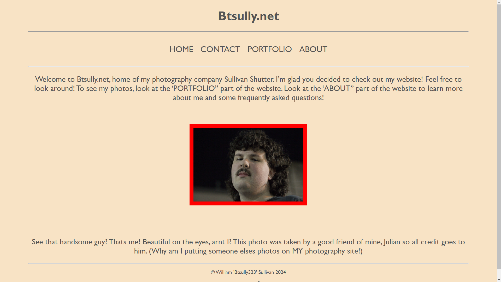
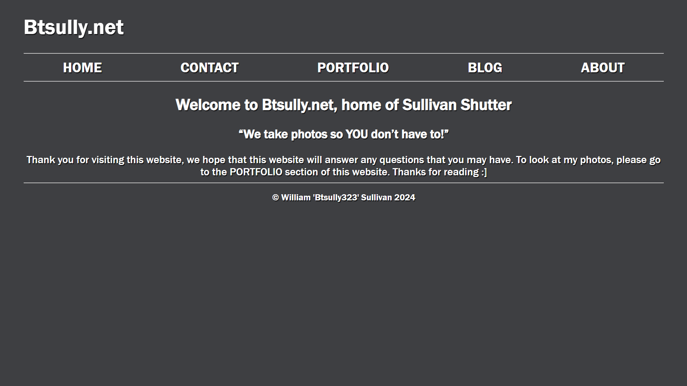

About me
Hey! My name is Billy, and I am the owner of this website! As of writing, I am an 18-year-old senior in high school from the Greater Boston area.
I’m a pretty weird, dude. Some of my hobbies include photography and videography, Playing the drum set, creating overly designed graphics for my local television station and figuring out Boston’s rather pitiful subway/transport system. Most of all, however, being with people I love, whether friends or family is my favorite activity. (Yeesh… Cheesy…). Don’t be afraid to reach out to me at any time for questions, suggestions, or really anything in that matter!
About the site
The day is January 18th 2024. It’s a cold Thursday. I had just had a band performance the night before, so my class didn’t do any work. I was bored and playing a song on the drum set. Out of the corner of my eye, I see my friend Julian on his laptop. Curious, I stand up from the throne and waltz on over to him. “Hey Julian, What’re you doing” I said to him. “oh i’m working on my website.” He said in his usual monotone voice. I was blown away – This dude had a website – that he coded? I want that! I asked him how to do that, and immediately after school we started talking about it. At first, I didn’t know what style I wanted. I knew I wanted something 80s-90s-esk but aside from that, I had nothing. We shared some inspiration between each other. Eventually I realized “WOW! This coding thing is tough. I don’t know how to do this!” So, I scraped the idea.
After a couple of days however, I began to work on my website. I created it in about a week. I was really proud of it! I tried to make it look as professional as I could. Its not too bad for my first attempt, but its not really… me? The odd background color, combined with grey letters looks alright, but is an accessibility nightmare. I also left an odd amount of dead space on the home page. In the end, I was super proud of it. When the coolness of it wore off however, I wasn’t happy with how it looked. I took a few months off from working on it and started working on V2.
Attached – Here is what V1 of this website looked like.
Version two was a lot better in my opinion. I knew a lot more going into it. I wanted to make it the 80s-90s theme again, but I still felt like it was way more than I could chew – so I put it on the backburner. This time, I wanted to make the website a little more laid back while still being formal. I chose to make the website a darker blueish-gray with white text to simulate a dark-mode theme. I was happy with how this website looked, it was smooth and was basically what I had in mind. Of course however, nothing ever works 100% of the time, and none of the images worked. None of them. Ever. I never got around to fixing them. I was super burnt out from making V2 and other things going on in my life, so I took the summer off. After summer ended and school came back in session, I knew that the time had come – to rip of the band aid and work on version three, my magnum opus!
Attached – Here is what V2 of this website looked like.
On November 9th, 2024 I began work on the third version of this website. I really wanted to get the 80s-90s retro feel to work on this site – and goddammit there’s no better time than now! I drew inspiration from an unlikely source, The Weather Channel. I’m not a huge fan of weather (I’m from New England, can you blame me?) so I must admit, I didn’t watch the weather channel when I was growing up – especially not this version as it comes from the 90s. This website is based of the late night programming of the weather channel, called the “Weather Star 4000”. During this segment – there were no people, just an occasional voice over, and nice calming synthy jazz music. It’s beautiful. The elegance of the music with the retro look of the channel is perfect to me. Originally, I started talking about the weather channel with my friends as a way to annoy them but with time, I began to feel gratitude towards it. It almost feels like I’m returning to an old friend every time I open up the youtube recreation of it.
Version three of this website is a love letter, not only to Weatherstar and The Weather Channel, but to all thing past, present and future. In a journey to recreate the past – of a time before I was born I was able to present this to you, the viewer. I hope this website brings you as much joy as it brings to me, and I hope that you feel a warm welcome. Thank you for reading this if you did.
Credits
The Weather Channel - for the general design of the "Weatherstar 4000" Which highly inspired this sites design.
Julian Jarjor of https://julianjarjour.github.io/ - for inspiring me to create this website and taking that awesome photo of me on site V1.
The supportive members of my friend group, The Pod - For being there for me while I lose it while making this site.
YOU the viewer - for taking the time out of your day to go on to this site!